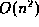

Directory Contents
Bubble sort, one of the simplest algorithms for sorting an array,
consists of repeatedly exchanging pairs of adjacent array elements
that are out of order until no such pair remains. The serial software
implementation of bubble sort has a time complexity that is 
in the number of elements - only one pair of numbers can be examined
at a time, and n passes must be taken through the array, where n
is the number of elements. In contrast, by parallelizing exchanges,
the RawCS parallel hardware version sorts elements in a number of
clock cycles that is linear with n, and requires an amount of
hardware on the order of n.